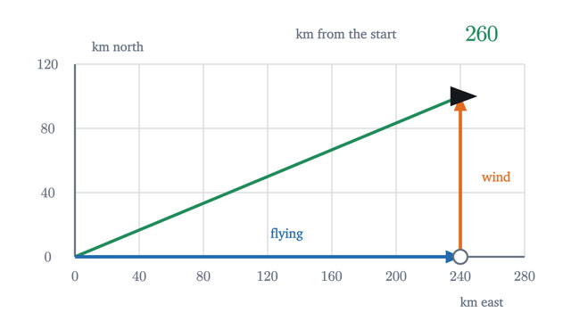
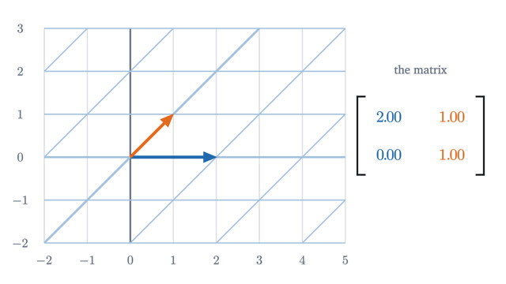
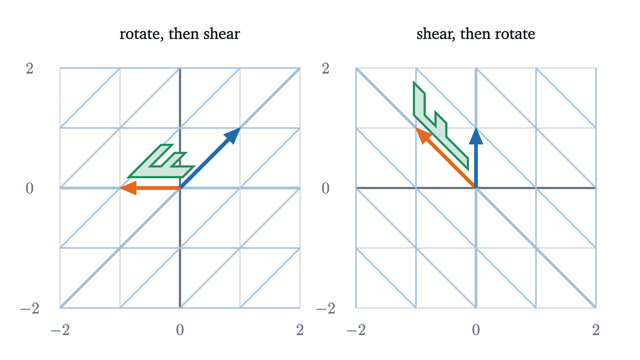
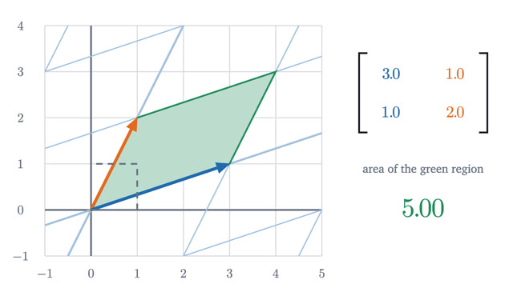
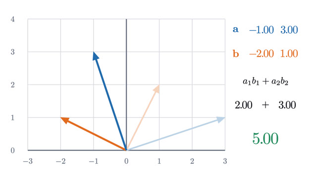
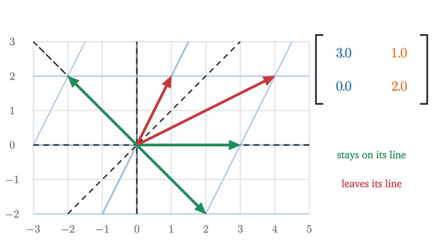
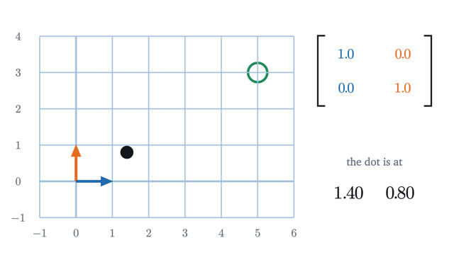

Linear Algebra
Vectors, matrices as motions of space, determinants and eigenvectors.
The series treats a matrix as a motion of space. Vectors come first, then matrices as transformations and multiplication as doing one after another. The determinant, the dot product and eigenvectors each describe something a transformation does, and the last lesson solves systems of equations by running a transformation backward.
Start with lesson 1-
1
What is a vector? Arrows, lists of numbers, and adding themA vector is a list of numbers read as a movement. Adding entry by entry matches placing arrows tip to tail, and two non-parallel arrows reach the whole plane.

-
2
A matrix is a transformation of spaceA 2x2 matrix moves every point of the plane, and its two columns say where the basis arrows land. Linearity is why those four numbers settle everything else.

-
3
Why matrix multiplication is defined the way it isMultiplying matrices means doing one transformation after another. The rows-times-columns rule, the failure of AB = BA and associativity all follow from that.

-
4
The determinant is how much area gets scaledA matrix multiplies every area in the plane by one number, ad - bc. That explains its sign, why det(AB) = det(A)det(B), and which matrices can be undone.

-
5
The dot product: projection, angle and why the formula worksMultiply matching coordinates and add. The result measures how far one arrow reaches along another, which gives angles, projections and Cauchy-Schwarz.

-
6
Eigenvectors: the directions a transformation leaves aloneMost arrows are knocked off their line by a matrix. The few that are only stretched are its eigenvectors, and they turn matrix powers into powers of numbers.

-
7
Solving Ax = b by undoing a transformationA linear system asks which vector a matrix sends to b. That view explains when there is one solution, none or a whole line, and what the inverse matrix does.
